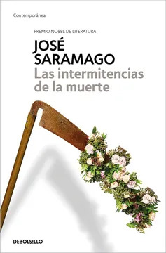
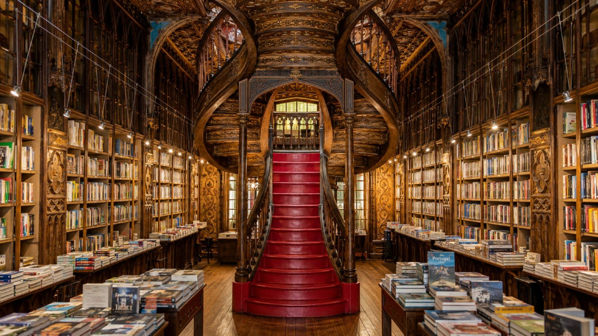
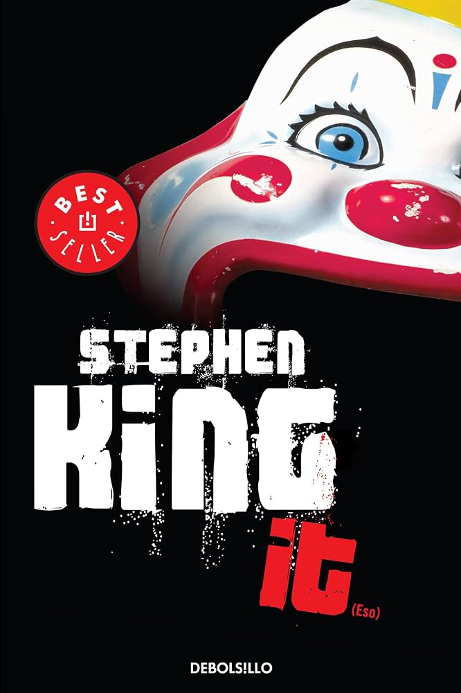
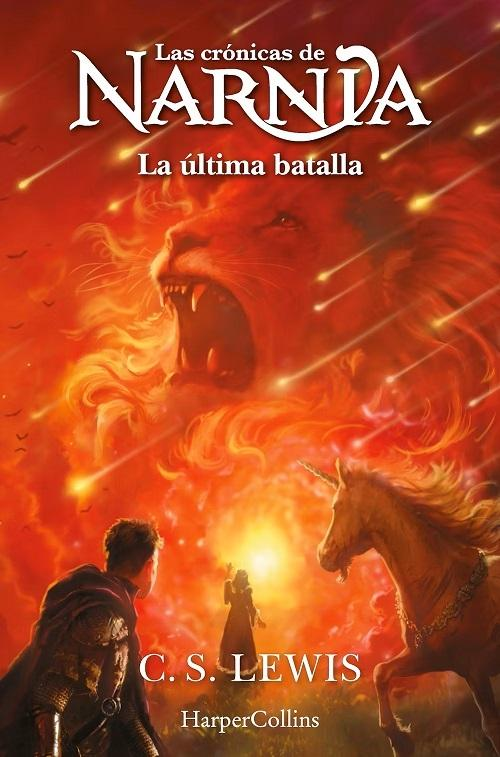

Las intermitencias de la muerte
José Saramago · Novela
¿Y si la gente dejara de morirse?Una brillante satira del Nobel de Literatura que juega con el miedo mas profundo del ser humano.
S/ 49.00
Reservar ejemplarNovedades, usados en buen estado y recomendaciones de quienes los han leído.
Ver el catálogo
Novela contemporánea, clásicos y cuento latinoamericano.
Ver narrativaÁlbum ilustrado, primeras lecturas y novela juvenil.
Ver infantilHistoria, filosofía, ciencia y crónica periodística.
Ver ensayoEjemplares revisados, a mitad de precio o menos.
Ver usados
José Saramago · Novela
¿Y si la gente dejara de morirse?Una brillante satira del Nobel de Literatura que juega con el miedo mas profundo del ser humano.
S/ 49.00
Reservar ejemplar
Stephen King · Novela
¿Quien o que mutila y mata a los niños de un pequeño pueblo norteamericano?¿Por que llega cíclicamente el horror a Derry en forma de un payaso siniestro que va sembrando la destrucción a su paso?
S/ 99.00
Reservar ejemplar
C. S. Lewis · Narrativo
Durante los últimos días de Narnia, el lugar se enfrenta a su desafío más cruel; no se trata de un invasor de fuera sino de un enemigo interno. Mentiras y traición han echado raíces, y únicamente el rey y un grupo reducido de seguidores leales puede impedir la destrucción de todo lo que más quieren en este magnífico colofón de Las Crónicas de Narnia.
S/ 53.00
Reservar ejemplarNos reunimos el último jueves de cada mes. Un libro, café incluido y sin necesidad de haberlo terminado.